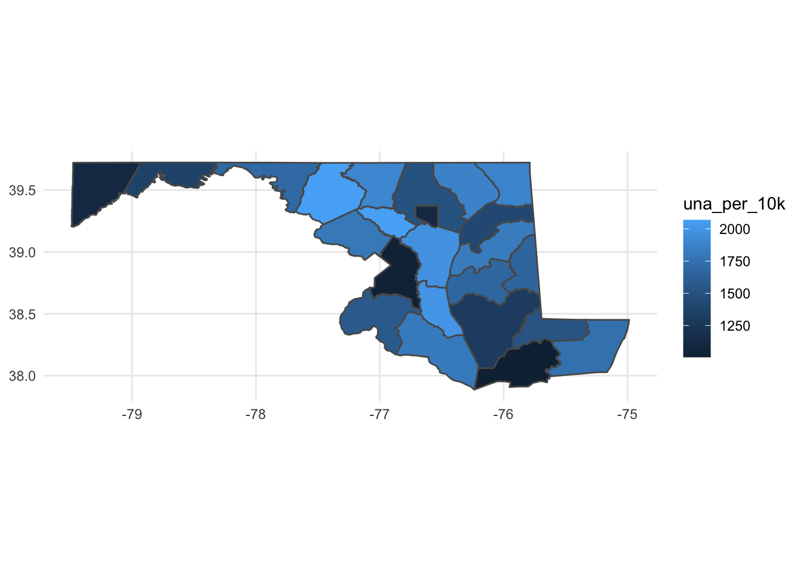
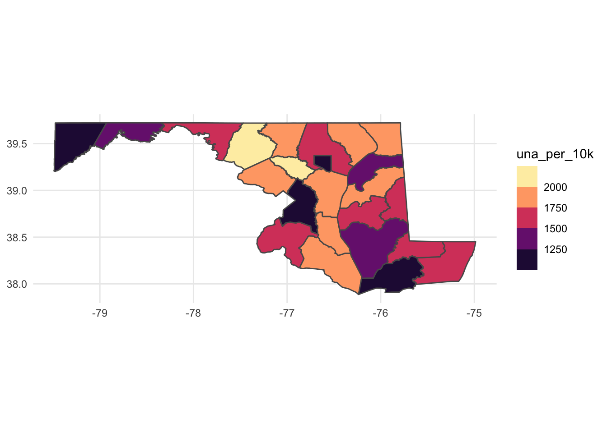

library(tidyverse)
library(sf)
library(janitor)
library(tidycensus)
census_api_key("549950d36c22ff16455fe196bbbd01d63cfbe6cf")28 Geographic analysis
In the previous chapter, we looked at the demographics of Census blocks in Baltimore city and made a nice map. Let’s go little further and combine demographic data with political data to learn more about Maryland’s political geography.
First, let’s load the libraries we’ll need. We’re also going to load tidycensus and set an API key for tidycensus.
And now let’s load a dataframe of Maryland county population information from the 2020 Census, but this time we’ll add in county geographic data.
maryland_counties <- read_csv("data/md_counties_2020.csv")Rows: 24 Columns: 39
── Column specification ────────────────────────────────────────────────────────
Delimiter: ","
chr (8): SUMLEV, GEOCODE, NAME, BASENAME, FILEID, STUSAB, CHARITER, CIFSN
dbl (31): GEOID, LOGRECNO, TOTAL_POP, POP_ONE_RACE, POP_WHITE, POP_BLACK, PO...
ℹ Use `spec()` to retrieve the full column specification for this data.
ℹ Specify the column types or set `show_col_types = FALSE` to quiet this message.maryland_county_shapes <- st_read("data/Maryland2020_County.json")Reading layer `Maryland2020_County' from data source
`/Users/derekwillis/code/datajournalismbook-elections/data/Maryland2020_County.json'
using driver `ESRIJSON'
Simple feature collection with 24 features and 18 fields
Geometry type: POLYGON
Dimension: XY
Bounding box: xmin: -79.48765 ymin: 37.8866 xmax: -74.98628 ymax: 39.72304
Geodetic CRS: NAD83maryland_counties_with_shapes <- maryland_counties %>% inner_join(maryland_county_shapes, by=c('GEOID'='GEOID20'))Error in `inner_join()`:
! Can't join on `x$GEOID` x `y$GEOID` because of incompatible types.
ℹ `x$GEOID` is of type <double>>.
ℹ `y$GEOID` is of type <character>>.And there’s that join error: we’ve got incompatible data types. We can quickly fix that:
maryland_counties <- read_csv("data/md_counties_2020.csv") %>% mutate(GEOID = as.character(GEOID))Rows: 24 Columns: 39
── Column specification ────────────────────────────────────────────────────────
Delimiter: ","
chr (8): SUMLEV, GEOCODE, NAME, BASENAME, FILEID, STUSAB, CHARITER, CIFSN
dbl (31): GEOID, LOGRECNO, TOTAL_POP, POP_ONE_RACE, POP_WHITE, POP_BLACK, PO...
ℹ Use `spec()` to retrieve the full column specification for this data.
ℹ Specify the column types or set `show_col_types = FALSE` to quiet this message.maryland_county_shapes <- st_read("data/Maryland2020_County.json")Reading layer `Maryland2020_County' from data source
`/Users/derekwillis/code/datajournalismbook-elections/data/Maryland2020_County.json'
using driver `ESRIJSON'
Simple feature collection with 24 features and 18 fields
Geometry type: POLYGON
Dimension: XY
Bounding box: xmin: -79.48765 ymin: 37.8866 xmax: -74.98628 ymax: 39.72304
Geodetic CRS: NAD83maryland_counties_with_shapes <- maryland_counties %>% inner_join(maryland_county_shapes, by=c('GEOID'='GEOID20'))For the rest of this chapter, we’re going to work on building a map that will help us gain insight into geographic patterns in registered voters and population by county and in Maryland. Our starting question: by examining the number of voters and the population in each county, what regional geographic patterns can we identify?
First we need to load voter registration data - since the population data is from 2020, we’ll use the county totals as of the 2020 general election. And we’ll make sure that the FIPS code that we need to join on is a character column:
maryland_voters_by_county <- read_csv("data/maryland_voters_2020g.csv") %>% mutate(FIPS=as.character(FIPS))Rows: 24 Columns: 11
── Column specification ────────────────────────────────────────────────────────
Delimiter: ","
chr (1): County
dbl (10): FIPS, DEM, REP, BAR, GRN, LIB, WCP, OTH, UNA, TOTAL
ℹ Use `spec()` to retrieve the full column specification for this data.
ℹ Specify the column types or set `show_col_types = FALSE` to quiet this message.Now let’s combine our two dataframes:
maryland_voters_by_county_with_pop <- maryland_voters_by_county %>% inner_join(maryland_counties_with_shapes, by=c('FIPS'='GEOID'))Now we can do some calculations and visualize them on a map. Let’s calculate the number of Unaffiliated (no party) voters per 10,000 people and take a look at just the numbers.
md_una_per_10k <- maryland_voters_by_county_with_pop %>%
mutate(una_per_10k = UNA/TOTAL_POP*10000) %>%
arrange(desc(una_per_10k)) %>%
select(County, DEM, REP, OTH, UNA, TOTAL, una_per_10k, geometry)
md_una_per_10k# A tibble: 24 × 8
County DEM REP OTH UNA TOTAL una_p…¹ geometry
<chr> <dbl> <dbl> <dbl> <dbl> <dbl> <dbl> <POLYGON [°]>
1 Frederick 72487 68767 801 42961 186356 2069. ((-77.62017 39.48469, -7…
2 Howard 118705 52748 2035 51909 226634 2067. ((-77.041 39.23419, -77.…
3 Calvert 24587 28181 567 14178 67984 1999. ((-76.69195 38.68377, -7…
4 Anne Aru… 174494 135457 2715 90162 405616 1977. ((-76.81615 39.12143, -7…
5 Carroll 33662 63967 1072 25770 125361 1908. ((-77.19802 39.57543, -7…
6 Cecil 21601 30880 727 15110 68819 1878. ((-75.93711 39.72188, -7…
7 Harford 66258 80038 1535 37942 187092 1875. ((-76.45929 39.50719, -7…
8 Queen An… 11091 18930 280 7133 37678 1824. ((-76.04684 39.16321, -7…
9 Saint Ma… 26373 30661 606 15661 73833 1813. ((-76.82022 38.43505, -7…
10 Montgome… 410935 105561 5816 147417 673198 1800. ((-77.43151 39.23217, -7…
# … with 14 more rows, and abbreviated variable name ¹una_per_10kLet’s take a look at the result of this table. We might call this where the swing voters are, although political science tells us that most independents actually vote with a party most of the time. Frederick, Howard, Calvert, Anne Arundel and Carroll counties all have some competitive races at the local and state level, so that makes some sense. Montgomery, the state’s largest jurisdiction, has more independents than Republicans.
Okay, now let’s visualize. We’re going to build a choropleth map, with the color of each county – the fill – set according to the number of unaffiliated voters per 10K on a color gradient.
ggplot() +
geom_sf(data=md_una_per_10k, aes(fill=una_per_10k)) +
theme_minimal()Error in `check_required_aesthetics()`:
! stat_sf requires the following missing aesthetics: geometrySo this error message is pretty sneaky, because it’s saying that it can’t find a geometry column. But we have a geometry column - it’s called geometry! What’s happening here is that ggplot expects certain details in order to be able to locate the column with geometry in it, and sometimes when we build a new dataframe through joins those details get dropped. Luckily, we can explicitly tell ggplot where to find it:
ggplot() +
geom_sf(data=md_una_per_10k, aes(fill=una_per_10k, geometry=geometry)) +
theme_minimal()
This map is okay, but the color scale makes it hard to draw fine-grained differences. Let’s try applying the magma color scale we learned in the last chapter.
ggplot() +
geom_sf(data=md_una_per_10k, aes(fill=una_per_10k, geometry=geometry)) +
theme_minimal() +
scale_fill_viridis_b(option="magma")
Some interesting regional patterns finally emerge.
The highest number of unaffiliated voters per capita are clustered close to DC and Baltimore, with the notable exception of Prince George’s County. The further west you go, the lower number of unaffiliated voters per capita there are (and that’s somewhat true for the Eastern Shore, too). You could swap out UNA for Republicans or Democrats, or look at this another way, but what you’re trying to see here are potential patterns for further exploration.